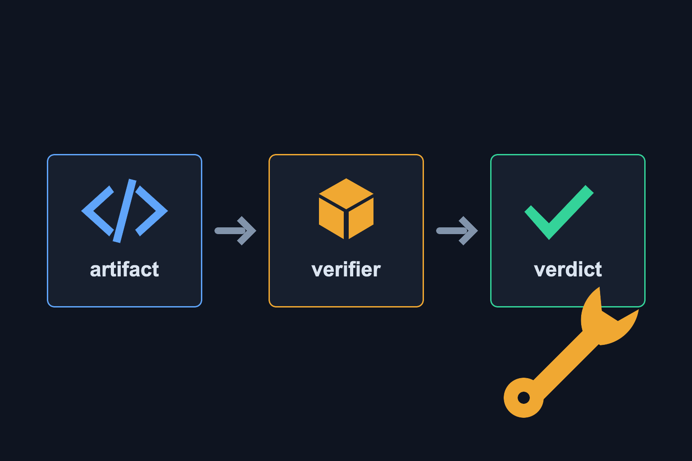
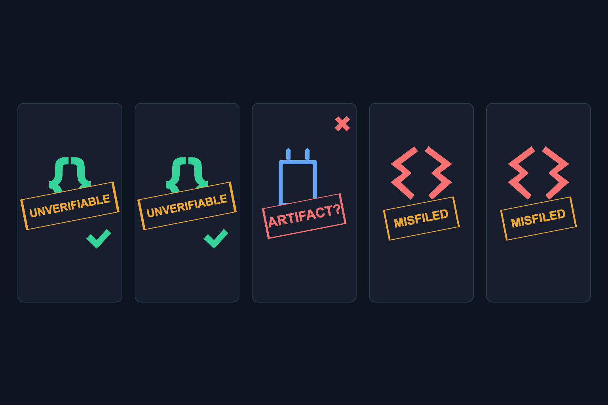
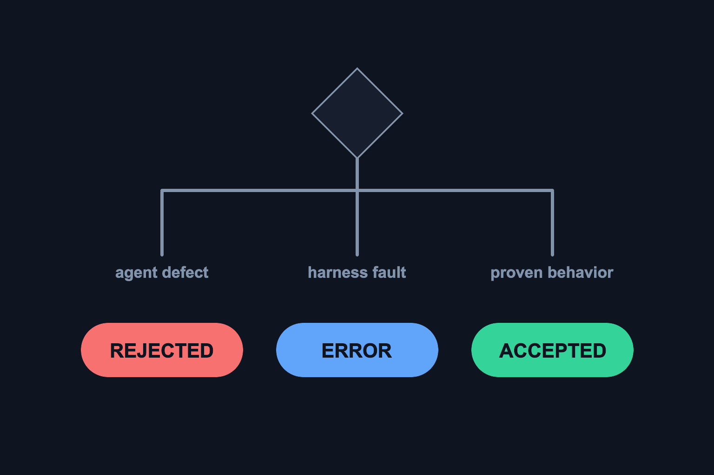
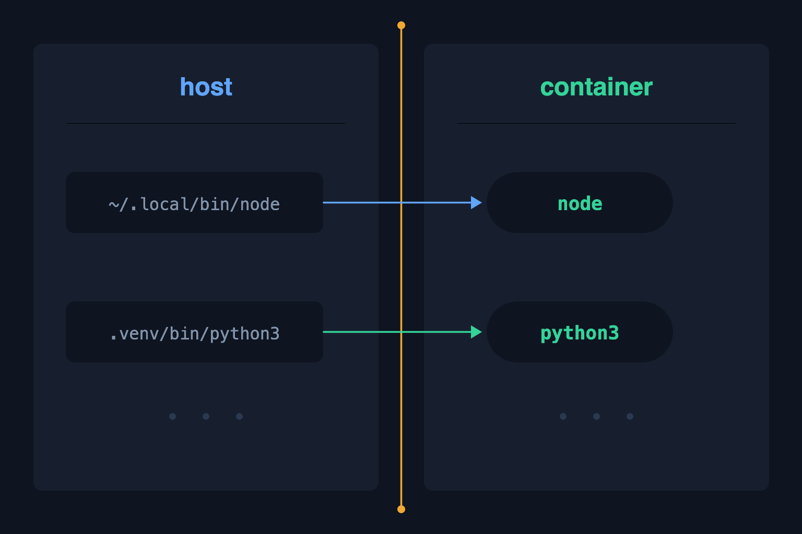
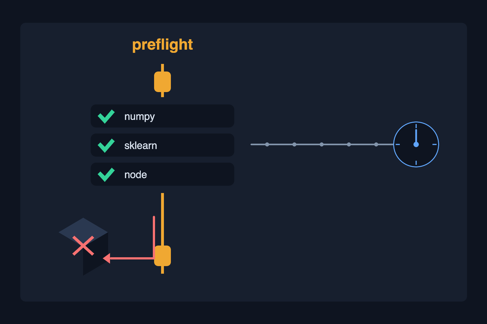
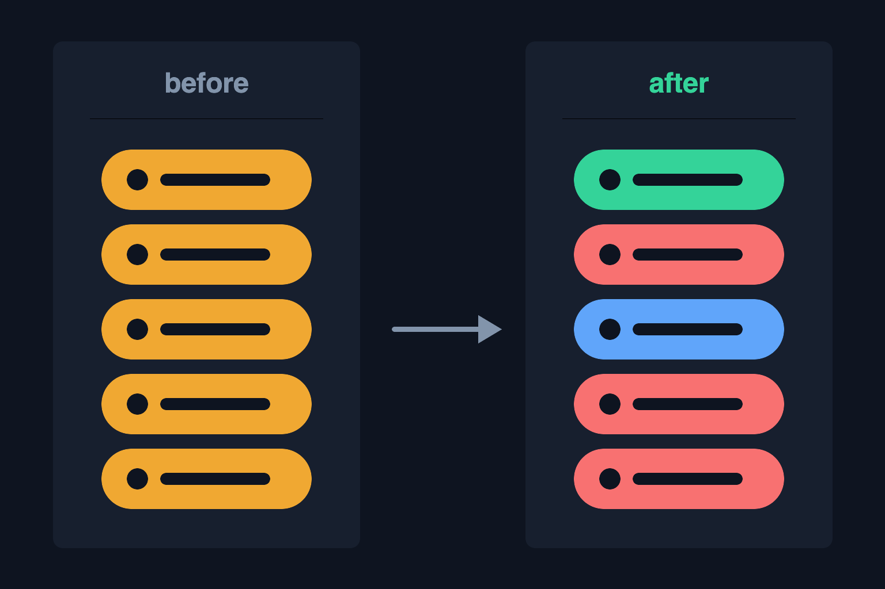

Plan: Harness Acceptance Judgment Repair

Purpose
Repair the acceptance-judgment layer of the eval harness so that every verdict attributes failure to the right party. The July-15 qualification run (evals/results/baseline-v2.partial.json, gemma-4-12b-qat, 3 verified / 5 timeout) proved the fail-honest direction holds — there were zero false greens — but of the five non-verified goals, two were working artifacts the harness failed to exercise, one was a harness bug mislabeled as an artifact problem, and two were real defects filed under the wrong category. A harness that under-credits and misattributes cannot produce a trustworthy baseline any more than one that over-credits. Completion means: replaying the four recorded July-15 misjudgments yields the correct verdict for each, a stale verifier image can never again burn a 30-minute goal budget, and every recorded command is the command that actually executed.
Problem
Ground-truth inspection of the July-15 artifacts (still live in their sandbox containers) against the recorded verdicts found five judgment errors and three root-cause logic discrepancies:
| Goal | Recorded verdict | Ground truth | Correct verdict |
|---|---|---|---|
| tic-tac-toe | unverifiable — "could not exercise artifact" | check_winner is behaviorally perfect (X-row → Player.X, O-col → Player.O, draw → None). The driver crashed JSON-serializing the returned Player enum. |
accepted |
| dijkstra | unverifiable — "no finite distance for any known signature" | dijkstra(g,'A','D') → (4, ['A','B','C','D']) — correct. The driver never tries the most common graph format: dict-of-(neighbor, weight) tuples. (But the goal demands "useful tests" and there are none — a check the contract lacks entirely.) |
rejected (missing tests) |
| email-validator | unverifiable — "no result" | Docker said it plainly: exec: "/Users/…/.local/bin/node": no such file. ContainerRunner passed the host node path into the container. The artifact (regex validator, bare-function export, test file) was never exercised. |
error (harness), likely accepted on re-run |
| digits | error — "training dependency unavailable" | discover() picked .forge-home/…/scipy/_lib/cobyqa/main.py — scipy's internals — because the workspace-local pip tree isn't pruned and sorts before main.py. The real main.py is a stub that trains nothing. |
rejected (no results.json) |
| json-parser | unverifiable — "could not exercise artifact" | lexer.py:87 holds a genuine SyntaxError (elif char == '\':). Code that cannot parse is a defective deliverable, not an un-judgeable one. |
rejected (artifact defect) |
The root causes beneath the table: (1) the verifier image is stale — forge-sandbox:latest was built July 6, before the numpy/scikit-learn pin, so import numpy fails in-container and preflight only checks image presence, never its runtime contract — this simultaneously broke the digits verifier and caused the digits timeout (the agent spent its whole 1800s pip-installing sklearn); (2) .forge-home/.forge-internal leak into snapshots and target discovery; (3) evidence records the pre-translation command — checks show the host venv path while a docker-translated invocation actually ran.

Solution
Six small, test-pinned repairs, ordered so each layer's fix is provable before the next depends on it. First make the drivers unable to crash on exotic-but-valid return types (enum-safe emission). Then give verdicts a three-way taxonomy derived from where a failure occurred: a traceback ending in agent code is an artifact defect (rejected); a docker/OCI failure or a traceback inside our own driver is a harness fault (error); only a genuinely un-drivable artifact remains unverifiable. Then stop agent-controlled bytes (.forge-home) from polluting discovery and snapshot digests; translate host tool paths at the container boundary and record the command that actually ran; broaden the dijkstra battery to the graph formats real agents produce (plus the missing "useful tests" requirement); and make preflight validate the verifier image's runtime contract — not just its existence — so a stale image fails closed in seconds instead of silently costing hours. Finally, replay all four recorded misjudgments as fixtures and re-run the affected goals live.

Relevant Files
Existing Files
- existing
evals/acceptance.py— every fix but two lands here:_emit(≈line 316) enum-safe serialization,_finalize(≈line 371) taxonomy,_PRUNE_DIRS(≈line 59),discover()hidden-dir skip,ContainerRunner._to_container(≈line 217) tool translation, dijkstra driver strategies (≈line 623), executed-command evidence. - existing
forge_runtime/sandbox.py—_SNAPSHOT_PRUNE(≈line 62) must exclude.forge-home/.forge-internalso snapshot digests stop hashing agent-installed pip trees. - existing
evals/preflight.py— newcheck_verifier_runtimes(); wire intorun_preflight()(≈line 145). - existing
evals/orchestrator.py— preflight call gains the verifier-runtime requirement;_verdict_fromconsumes the sharpened acceptance taxonomy unchanged (verify mapping only). - existing
docker/sandbox/Dockerfile— already pins numpy/scikit-learn; the image must be rebuilt and its digest recorded. - existing
tests/test_acceptance_contracts.py— extend with taxonomy, pruning, and translation cases. - existing
evals/results/baseline-v2.partial.pre-requalification-20260716.json— preserved read-only copy of the July-15 evidence used to derive the recorded fixtures below. The canonicalbaseline-v2.partial.jsonpath is reserved for the fresh full-suite checkpoint.
New Files
- new
tests/test_recorded_misjudgments.py— one fixture per July-15 misjudgment (enum-returning tic-tac-toe, tuple-adjacency dijkstra, stub digits with a.forge-homedecoy, SyntaxError json-parser, bare-export email validator). Each asserts the corrected verdict, so any regression that reopens a misjudgment fails by name. - new
specs/harness-acceptance-judgment-repair/— this plan's generated images.
Implementation Phases
IMPORTANT: Execute every phase and task step by step, in order, top to bottom.
Status markers: [] idle · [wip] in progress · [x] complete · [f] failed. All start as []; the Build Plan workflow updates them as it works.
[x] Phase 1: Enum-Safe Drivers and the Verdict Taxonomy
A driver must never crash on a valid-but-exotic return type, and when anything does fail, the verdict must say whose failure it was. The tic-tac-toe misjudgment came from json.dumps choking on an Enum; the json-parser and email misjudgments came from _finalize collapsing every driver error into "unverifiable".
1. Make driver emission total
[x]In_PY_PREAMBLE's_emit(evals/acceptance.py ≈316), serialize withjson.dumps(payload, default=str)so any non-JSON value (enums, Paths, custom objects) degrades to its string form instead of killing the run.[x]Add a preamble helper_plain(v)→getattr(v, "value", v)and route every driver'sgotthrough it before comparison and before appending tocases, soPlayer.X(value"X") satisfiesas_x()and serializes cleanly.[x]Update the tic-tac-toe driver'sas_x/as_nonepredicates to compare against_plain(v)andstr(v)(coversPlayer.X,"X",1, andNone-likes).[x]Keep result emission outside the untrusted candidate process. Python artifacts now execute behind a narrow RPC worker; candidatestdout/sys.__stdout__is diagnostic-only, while the trusted parent owns expectations, comparisons, and the sole result sentinel. Direct emitter calls, emitter replacement, andsys.__stdout__+os._exit(0)forgeries are regression-pinned as non-passes.
2. Three-way failure attribution in _finalize
Classify driver_error text structurally — the traceback's deepest frame tells the truth:
# evals/acceptance.py — attribution helper (sketch)
_INFRA_MARKERS = ("docker:", "OCI runtime", "Cannot connect to the Docker daemon",
"no such file or directory: unknown", "container init")
def _attribute_failure(driver_error: str) -> str:
"""'artifact' | 'harness' | 'unknown' from where the failure occurred."""
if any(m in driver_error for m in _INFRA_MARKERS):
return "harness" # docker/exec plumbing failed
agent_frames = re.findall(r'File "(/verify/[^"]+)"', driver_error)
ours = [f for f in agent_frames if "_acceptance_driver" in f]
theirs = [f for f in agent_frames if "_acceptance_driver" not in f]
if theirs and (not ours or driver_error.rfind(theirs[-1]) > driver_error.rfind(ours[-1])):
return "artifact" # deepest frame is agent code
if ours:
return "harness" # our driver itself raised
return "unknown"[x]Add_attribute_failure()and route_finalize'sdriver_errorbranch through it:artifact→ verdictrejectedwith reason"artifact defect: …";harness→ verdicterror;unknown→ verdictunverifiable(unchanged).[x]In_cases_to_checks, when no sentinel line was produced andproc.stderrcarries an infra marker, return the harness attribution instead of a bare "no result" — the email-validator case.[x]Confirm the outcome mapping downstream (orchestrator._verdict_from,runner._VERDICT_TO_OUTCOME):rejected+claimed-done stays a false completion;errormaps toHARNESS_ERROR; no mapping change should be needed — assert it in tests, don't assume it.[x]Replay check: the recorded json-parser SyntaxError text must now attributeartifact; the recorded email docker stderr must attributeharness; the recorded tic-tac-toe driver traceback (pre-fix shape) must attributeharness.
3. Testing Strategy
Pure unit tests over recorded failure text — no Docker needed. Edge cases: tracebacks containing both driver and agent frames (deepest wins), infra markers inside agent stderr, empty error strings.
[x]PYTEST_DISABLE_PLUGIN_AUTOLOAD=1 uv run --extra dev python -m pytest -q -o addopts='' tests/test_acceptance_contracts.py -k "attribut or enum or taxonomy"— attribution and enum-safety are pinned.[x]uv run --extra dev ruff check evals/acceptance.py— lint clean.
[x] Phase 2: Discovery and Snapshot Hygiene
Agent-controlled dependency trees must never be candidates for "the deliverable". The digits verifier executed scipy/_lib/cobyqa/main.py because .forge-home sorts before main.py and no prune rule excludes it.
1. Prune the workspace-local Forge internals everywhere
[x]Add".forge-home",".forge-internal",".forge-sandbox-host-import-v1"to_PRUNE_DIRS(evals/acceptance.py ≈59).[x]Add".forge-home",".forge-internal"to_SNAPSHOT_PRUNE(forge_runtime/sandbox.py ≈62) so snapshot digests hash the artifact, not the agent's pip cache.[x]Hardendiscover(): skip any candidate whose relative path contains a component starting with"."— hidden trees are never deliverables; explicit prune sets remain for byproduct dirs likenode_modules.[x]Prefer shallow matches on name-hint ties: sort candidates by(len(p.parts), str(p))so a top-levelmain.pyalways beats a nested one.
2. Testing Strategy
Fixture workspace reproducing the digits layout: stub top-level main.py plus a .forge-home/.local/lib/python3.11/site-packages/scipy/_lib/cobyqa/main.py decoy. Edge cases: workspace whose only python file is hidden (must be unverifiable, not judged on hidden bytes), snapshot digest equality before/after adding .forge-home content.
[x]PYTEST_DISABLE_PLUGIN_AUTOLOAD=1 uv run --extra dev python -m pytest -q -o addopts='' tests/test_acceptance_contracts.py tests/regression/test_sandbox.py -k "prune or hidden or forge_home or discover"— discovery picks the real file; digests ignore agent pip trees.[x]uv run --extra dev ruff check evals/acceptance.py forge_runtime/sandbox.py— lint clean.
[x] Phase 3: Container Command Fidelity
The verifier container must receive commands it can execute, and the evidence must record the command that actually ran. Today _to_container translates only the Python interpreter and mount-relative paths — the host's node path sailed through and killed the email-validator verification; meanwhile every recorded Check.command shows the untranslated host form.

1. Translate host tool paths at the boundary
# ContainerRunner._to_container — extend (sketch)
_CONTAINER_TOOLS = {"node", "npm", "npx", "python", "python3", "pytest",
"cargo", "rustc", "g++", "gcc", "cc", "make", "cmake"}
if token == PYTHON or token == str(PYTHON):
return "python3"
candidate = Path(token)
if candidate.is_absolute():
try: # mount-relative → /verify/…
return str(PurePosixPath("/verify") / candidate.resolve().relative_to(root))
except ValueError:
if candidate.name in _CONTAINER_TOOLS:
return candidate.name # host tool → container binary
return token[x]Extend_to_containerper the sketch: absolute paths outside the mount whose basename is a known toolchain binary map to the bare basename; anything else still passes through untouched (never mangle data arguments).[x]Audit contract call sites that resolve host tools (shutil.which("node")in the email contract, cargo/g++ in manifest contracts): under aContainerRunnerthey must not fail early because the host lacks a tool the image has — gate the which() check onactive_runner().gateable.[x]Record executed commands: giveRunnerarender(cmd, cwd) → list[str](identity onHostRunner; the full docker argv onContainerRunner) and populate a newCheck.executed_commandalongside the logicalcommandwherever checks are built, so the report shows both intent and reality.
2. Testing Strategy
Unit tests on _to_container (no Docker): host node path → node, venv python → python3, mount-internal path → /verify/…, a -c "code; with; semicolons" data token unchanged, a non-tool absolute path unchanged. Docker-gated: email-validator fixture verified end-to-end in the real container.
[x]PYTEST_DISABLE_PLUGIN_AUTOLOAD=1 uv run --extra dev python -m pytest -q -o addopts='' tests/test_acceptance_contracts.py -k "to_container or executed_command or render"— translation and evidence fidelity pinned.[x]FORGE_TEST_DOCKER=1 PYTEST_DISABLE_PLUGIN_AUTOLOAD=1 uv run --extra dev python -m pytest -q -o addopts='' tests/test_acceptance_contracts.py -k "container"— real-boundary verification passes.
[x] Phase 4: Broaden the Dijkstra Battery and Close the Tests Gap
A contract that cannot speak the artifact's calling convention judges nothing. The dijkstra driver must try the graph formats agents actually produce — and the goal text says "with useful tests", a requirement the contract never checks (the July-15 artifact would still deserve rejection, for the right reason).
1. Add the missing graph-format strategies
[x]AddEDGE_LIST_GRAPH = {"A": [("B",1),("C",4)], "B": [("C",2),("D",5)], "C": [("D",1)], "D": []}besideGRAPH_DICT(evals/acceptance.py ≈623) and extendgetters()to the cross-product: both formats ×f(g, "A"),f("A", g),f(g, "A", node)— the winning strategy is still chosen once against node"D"and reused for every node.[x]Normalize tuple returns:_dist_fromalready unwraps(distance, path); assert it handles a bare numeric distance for the per-target signature.[x]Add a"has useful tests"check tocontract_dijkstra: parse shipped test files with the Python AST and require an actual non-literalast.Assert. Comments and strings containing the wordassert, plus literal tautologies, cannot satisfy the gate. A correct algorithm without tests → rejected with the failing check named, never accepted.
2. Testing Strategy
Fixtures: the recorded July-15 dijkstra (tuple adjacency, (graph, start, end), correct) with and without a real test file — with tests → accepted, without → rejected on exactly the tests check; the dict-of-dicts fixture must keep passing (no regression on the old format).
[x]PYTEST_DISABLE_PLUGIN_AUTOLOAD=1 uv run --extra dev python -m pytest -q -o addopts='' tests/test_acceptance_contracts.py -k "dijkstra"— both formats drive; the tests requirement gates acceptance.[x]uv run --extra dev ruff check evals/acceptance.py— lint clean.
[x] Phase 5: Verifier Runtime Preflight and Image Rebuild
The July-6 image silently lacked numpy — the fingerprint recorded the stale digest but nothing acted on it, breaking the digits verifier and burning a full goal budget on in-container pip installs. Preflight must prove the image satisfies the contracts' runtime needs before any goal launches, and fail closed in seconds.

1. Prove the image's runtime contract
# evals/preflight.py — new check (sketch)
VERIFIER_RUNTIME_PROBES = (
("python-sci", ["python3", "-c", "import numpy, sklearn"]),
("node", ["node", "--version"]),
)
def check_verifier_runtimes(image: str) -> Check:
for name, probe in VERIFIER_RUNTIME_PROBES:
r = subprocess.run(["docker", "run", "--rm", "--network", "none", image, *probe],
capture_output=True, text=True, timeout=60)
if r.returncode != 0:
return Check("verifier_runtimes", False,
f"{name} probe failed in {image}: {r.stderr.strip()[:160]}")
return Check("verifier_runtimes", True, f"{image} satisfies contract runtimes")[x]Rebuild the pinned image first:docker build -t forge-sandbox:latest -f docker/sandbox/Dockerfile .— the Dockerfile already pinsnumpy==2.1.3/scikit-learn==1.6.0; only the build is missing.[x]Addcheck_verifier_runtimes()to evals/preflight.py and wire it intorun_preflight()as a blocking check whenever a container-gated suite is requested.[x]Wire the orchestrator's preflight call to pass the sandbox image so the check runs before the lease is spent on a doomed suite.[x]Record the rebuilt digest in the next run's environment fingerprint (already automatic viaimage_digest()— verify, don't assume).[x]Resolve mutable sandbox/verifier tags once to immutable Docker image IDs before preflight. Use those exact IDs for preflight probes, child sandbox launches, every container verifier, and both fingerprint fields so a concurrent retag cannot invalidate comparability evidence.
2. Testing Strategy
Unit: monkeypatched subprocess proves fail-closed on a nonzero probe. Docker-gated: the probe passes against the freshly rebuilt image and fails against a bare debian:bookworm-slim (no numpy) — both directions proven.
[x]PYTEST_DISABLE_PLUGIN_AUTOLOAD=1 uv run --extra dev python -m pytest -q -o addopts='' tests/test_eval_orchestrator.py tests/test_acceptance_contracts.py -k "preflight or runtime"— fail-closed behavior pinned.[x]docker run --rm forge-sandbox:latest python3 -c "import numpy, sklearn; print(numpy.__version__, sklearn.__version__)"— the rebuilt image really has the pinned stack.
[wip] Phase 6: Replay the Recorded Misjudgments and Re-Qualify
The proof of the repair is the July-15 evidence re-judged correctly. Encode all five misjudgments as named fixtures, then re-run the affected goals live against the rebuilt image.
1. Recorded-misjudgment fixture suite
[x]Createtests/test_recorded_misjudgments.pywith five fixtures distilled from the July-15 containers: enum-returning tic-tac-toe → accepted; tuple-adjacency dijkstra with tests → accepted; the same without tests → rejected (tests check); stub digits +.forge-homedecoy → rejected ("no results.json", target = top-levelmain.py); SyntaxError json-parser → rejected ("artifact defect"); bare-export email validator (Docker-gated) → accepted.[x]Each test asserts the verdict and the reason category, so a future taxonomy regression fails with the goal's name in the test id.
2. Live re-qualification
[wip]The four original targeted re-runs were verified / accepted, but their fingerprints predate the final process-isolation contract. Preserve them as historical evidence; the final-contract full run below is the current qualification authority.[wip]Re-run the full eight-goal suite through the consolidated production orchestrator with a 75-minute per-goal wall-clock budget (--timeout 4500). The run started from a green blocking preflight with immutable image IDsha256:458ef96d…; do not promotebaseline-v2.jsonunless all eight final-contract results qualify.
3. Testing Strategy
The fixture suite is the fast gate; the live re-run is the slow proof. Order: fixtures → single goals → full suite. A live model (LM Studio gemma-4-12b-qat) and the docker Postgres on :5433 are required for the live half — mark [f] with evidence if either is down, never fabricate.
[x]PYTEST_DISABLE_PLUGIN_AUTOLOAD=1 uv run --extra dev python -m pytest -q -o addopts='' tests/test_recorded_misjudgments.py tests/test_acceptance_contracts.py tests/test_manifest_contracts.py— every recorded misjudgment now judges correctly.[wip]uv run --extra dev python -m evals.goal_suite_tui --model google/gemma-4-12b-qat --base-url http://127.0.0.1:1234/v1 --only N --output evals/results/requalify-*-v2.jsonforN = 2, 6, 7, 8— historical targeted artifacts are retained, but final-contract qualification is delegated to the current full-catalog run.[wip]uv run --extra dev python -m evals.goal_suite_tui --model google/gemma-4-12b-qat --base-url http://127.0.0.1:1234/v1 --timeout 4500 --output evals/results/baseline-v2.json— active in persistent sessionforge-baseline-75m-final; the older five-verified/three-timeout partial was copied tobaseline-v2.partial.pre-75m-final-20260716.jsonbefore launch.
Validation Commands
Execute these commands to validate the entire plan is complete:
[x]PYTEST_DISABLE_PLUGIN_AUTOLOAD=1 uv run --extra dev python -m pytest -q -o addopts='' tests— 479 passed, 19 skipped; full Python suite green, including Python/JavaScript process-isolation, AST-test, immutable-image, and recorded-misjudgment regressions.[wip]FORGE_TEST_DOCKER=1 PYTEST_DISABLE_PLUGIN_AUTOLOAD=1 uv run --extra dev python -m pytest -q -o addopts='' tests/test_acceptance_contracts.py tests/regression/test_sandbox.py— final combined rerun deferred until the live qualification is idle; the acceptance/replay container slice is green.[x]uv run --extra dev ruff check .— repository lint green.[x]docker run --rm forge-sandbox:latest python3 -c "import numpy, sklearn"— verifier runtime imports passed with numpy 2.1.3 and scikit-learn 1.6.0.[wip]uv run --extra dev python -m evals.goal_suite_tui --model google/gemma-4-12b-qat --base-url http://127.0.0.1:1234/v1 --timeout 4500 --output evals/results/baseline-v2.json— active final-contract live re-qualification; baseline promotion remains locked pending all eight results.
Notes
What the July-15 run proved, and what it did not
The run validated the whole reliability spine built by the amplification plan: lifecycle ownership (five timeouts, all terminated, zero orphans, correct resumable-pair classification), honest metrics (nulls with reasons), atomic per-goal checkpoints, an honest withheld baseline, and three genuine verified completions. What it did not validate is the judgment layer — which is exactly why this plan touches only evals/acceptance.py, evals/preflight.py, and one prune set in forge_runtime/sandbox.py, and leaves the lifecycle/orchestration machinery alone.
Verdict semantics after this plan
| Verdict | Means | Attributed to |
|---|---|---|
| accepted | Behavior reproduced in the verifier container | — |
| rejected | Artifact exercised (or statically defective: SyntaxError, missing required tests, missing required output) and found wanting | Agent |
| error | Docker/exec plumbing or our own driver failed — the artifact was never fairly judged | Harness |
| unverifiable | No drivable entry point found after honest search — reserved for genuinely un-judgeable shapes | Neither (honest non-pass) |
Deliberate non-goals
- No blanket signature-guessing framework. The dijkstra battery grows two concrete, observed formats — not an arbitrary-callable prober. If a third format shows up in evidence, add it then, with a fixture.
- No contract-strictness sweep of the other seven goals. Only dijkstra's goal text names tests explicitly ("with useful tests"). Auditing every goal's phrasing for implied requirements is future work — noted, not smuggled in.
- The five 1800s timeouts are a model/budget policy problem (gemma-4-12b burns turns without settling), not a judgment problem, and stay out of scope — except where the stale image caused the burn (digits).
- Sandbox container accumulation (one persistent container per eval project) is a resource-hygiene follow-up for the orchestrator, not a judgment fix.
Risks
- Traceback-text attribution is heuristic. It only ever downgrades "unverifiable" into a more specific verdict; on any ambiguity it returns
unknownand behavior is unchanged. The false-completion channel is unaffected:rejectedattribution can only add honest rejections, and gates already hard-fail on those. - Hidden-dir discovery skip could hide a legitimate artifact if an agent writes its deliverable into a dotted directory. Accepted: a hidden deliverable fails the "independently checkable artifact" bar anyway, and the unverifiable verdict says so honestly.
- The dijkstra tests-requirement changes a goal's difficulty mid-benchmark-series. That is the point — but it makes pre/post comparisons on that goal incomparable, which the contract-hash fingerprint already encodes (the hash changes with this file).

Amendments
2026-07-16 — live qualification disk gate and trust hardening
Added an emitter-forgery regression guard, persisted successful preflight evidence, fingerprinted the observed sandbox mode and the exact verifier image separately, made suite definitions hash their goal catalog plus metric semantics, and made baseline CLI exit nonzero unless baseline_status == "created". The tic-tac-toe live child completed and its exported snapshot was accepted in the rebuilt verifier, but the canonical replay correctly failed closed after free disk fell below the 2 GiB preflight minimum. No baseline was promoted.
2026-07-16 — cleanup recovery and completed live re-qualification
Removed exactly the fourteen terminal July-15 eval containers and their obsolete image without deleting Docker volumes, snapshots, result evidence, user work, or the loaded LM Studio model. After Docker recovery, all four affected goals verified and accepted live. A persistent full eight-goal production run then completed with a green preflight and rebuilt verifier digest: five goals verified, Snake/JSON Parser/Dijkstra timed out, no harness errors or false greens occurred, and baseline-v2.json was correctly withheld while the fresh partial recorded not_created_qualification_failed.
2026-07-16 — adversarial blocker repair
A final hostile review reproduced two same-process sentinel forgeries, a comment-only Dijkstra test false positive, and a mutable verifier-tag comparability race. Candidate Python now runs in a separate RPC worker while the trusted parent alone evaluates and emits results; useful tests are AST-checked; and image tags resolve once to immutable IDs used consistently by preflight, sandbox launch, verifier execution, and fingerprints. The new regressions pass in both host and Docker-gated suites.
2026-07-17 — final isolation closure and 75-minute qualification
Moved email-validator and Node CLI candidate loading into forked workers so untrusted JavaScript cannot write the trusted result stream, and made unresolved mutable Docker tags a blocking preflight failure even when an injected override is permissive. The full suite is green at 479 passed / 19 skipped. A final eight-goal production run is active with --timeout 4500; its older partial was preserved, its image IDs resolved immutably, and Phase 6 remains explicitly in progress until the final result is checkpointed.